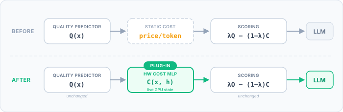

TL;DR: Most LLM routers pick the best model for each request but completely ignore GPU load. When traffic spikes, they keep routing to a GPU with 50 queued requests while other GPUs sit idle. The fix: swap your static
price/tokencost with a live latency prediction. One change to your scoring formula. SLO attainment goes from ~42% to ~98%.
The Problem: Routers That Ignore Hardware
If you're running multiple LLMs behind a quality router — RouteLLM, CARROT, or something custom — you've probably seen this cycle:
- Router picks the biggest model because it gives the best answers
- That model's GPU queue fills up
- Latency spikes to 40–50 seconds
- Smaller models sit completely idle
The root cause: your router's cost function is static. It uses
a fixed price/token that says "the 14B model costs more than the
3B." True, but irrelevant. When GPU 0 has 50 queued requests and GPU 1
is empty, that price doesn't change. So the router keeps hammering the busy GPU.
In our benchmarks across three different quality routers, more than half of all requests missed their latency deadline. Not because the routers were bad at picking quality — they're great at that. They just had zero visibility into what the hardware was doing.
The Fix: One Substitution
Every quality-aware router uses some version of this scoring formula:
score = λ * quality(model, prompt) - (1 - λ) * cost(model)The router picks whichever model scores highest. The fix is one substitution:
# Before: static cost (never changes)
cost = price_per_token[model]
# After: live cost (updates every second)
cost = predict_latency(model, prompt_length, gpu_state)Same quality predictor. Same formula. Same λ. You just change what "cost" means. Instead of a fixed price, you predict how long this request will actually take on this GPU right now.
That's why we call it a plug-in. Your quality predictor stays untouched. Any router gets hardware awareness just by swapping the cost term.

The green box is the only new piece. The rest of this post walks through the three things you need to build it: a GPU monitor, a latency predictor, and the integration into your router.
Know Your GPU: What Metrics Matter
To predict latency, your model needs to know what the GPU is doing right now.
If you serve LLMs with vLLM,
this is easy — it exposes a Prometheus /metrics endpoint out of the box.
curl http://localhost:8000/metricsYou'll get a wall of text. Here are the five metrics that actually matter:
| Metric | Why It Matters |
|---|---|
num_requests_waiting |
Queue depth — the #1 predictor of latency spikes. If 20 requests are ahead of you, you wait. |
num_requests_running |
Active decoding load. More concurrent requests = more memory contention = slower generation. |
kv_cache_usage_perc |
Memory pressure. Near 100% and vLLM can't batch new requests at all — latency cliff. |
time_to_first_token |
Recent TTFT trend. A sudden jump from 0.2s to 3s means the GPU is struggling. |
inter_token_latency |
Current generation speed. Tells you how fast tokens are coming out right now. |
The approach is simple: run a background thread that polls /metrics
on each vLLM server every few seconds. Parse the Prometheus text, store the latest
snapshot per model. That's your GPU state vector.
Not using vLLM? The concept is the same for any serving framework. TGI, TensorRT-LLM, and Triton all expose queue depth and memory metrics — just through different endpoints. You need three signals: queue depth, active requests, and memory pressure.
Build a Latency Predictor
Now you need a model that takes (prompt length + GPU state) and predicts how long a request will take. We use a small MLP (multi-layer perceptron) with two output heads — one for time-to-first-token, one for time-per-output-token.
Inputs and outputs
For each request, the predictor sees:
- Prompt token count — longer prompts take longer to prefill
- GPU metrics snapshot — the five metrics from above
- Model-GPU identifier — a 14B on GPU 0 behaves differently than a 3B on GPU 1
And it predicts:
- TTFT (time to first token) — how long until the first token arrives
- TPOT (time per output token) — how fast subsequent tokens stream
Collecting training data
The key insight: you must collect data under varying load. If you only measure latency when the server is idle, the predictor won't know what "busy" looks like. Send concurrent requests with different traffic patterns — steady, bursty, and overloaded — while recording the GPU state at the moment each request was sent plus the actual latency it experienced.
Around 3,000–15,000 samples with varied concurrency levels is enough. More data helps, but diminishing returns past 15K.
Training
The MLP is intentionally tiny: two hidden layers (128 and 64 neurons), predicting in log-space (because latency distributions are heavily skewed). The whole thing trains in ~20 seconds on a CPU. No GPU needed.
One subtlety: we predict in log-space (log(TTFT),
log(TPOT)) so that the loss function treats a 2x error
the same whether it's 0.1s→0.2s or 10s→20s. At inference, exponentiate back.
Plug It Into Your Router
This is the payoff. You have a trained latency predictor and a live GPU monitor. Here's the change to your routing code:
Before (quality-only)
for model in models:
quality = quality_predictor(model, prompt)
cost = PRICE_PER_TOKEN[model] # static!
score = lam * quality - (1 - lam) * costAfter (hardware-aware)
for model in models:
quality = quality_predictor(model, prompt) # unchanged
latency = predict_latency(model, prompt, gpu_state[model])
cost = normalize(latency) # live!
score = lam * quality - (1 - lam) * cost # same formula
That's the entire change. The quality predictor, scoring formula, and
λ parameter are all untouched. The MLP forward pass adds
<1ms of routing overhead.
The λ knob
λ gives you a single dial for the quality-speed trade-off:
- λ → 1.0: Prioritize quality. Always pick the best model, even if the GPU is busy.
- λ → 0.0: Prioritize speed. Route to whichever model responds fastest.
- λ = 0.5: Balanced. Near-perfect SLOs with minimal quality loss.
A customer-facing chatbot might use λ = 0.3 (users want fast
replies). An offline analysis pipeline might use λ = 0.8
(quality matters more than speed). Try our interactive demo
to see how λ shifts the trade-off curve in real time.
Does It Work?
We tested this across three quality routers with 5 LLMs on 2 NVIDIA H100 GPUs under realistic traffic:
| Router | Before (static cost) | After (HW-aware) | Improvement |
|---|---|---|---|
| CARROT | 44.7% SLO, 43.9s avg | 96.1% SLO, 14.4s avg | +51pp, 3.0× faster |
| IRT | 42.2% SLO, 45.3s avg | 97.9% SLO, 12.9s avg | +56pp, 3.5× faster |
| UMR | 37.3% SLO, 48.4s avg | 91.5% SLO, 16.7s avg | +54pp, 2.9× faster |
Every router sees 50+ percentage point SLO improvement and ~3x latency reduction. The hardware cost predictor works as a universal plug-in — it doesn't care which quality router you're using.
Quality drops by about 9% relative (0.669 → 0.606). That's the trade-off: when the big model's GPU is saturated, the router sends requests to a smaller model on an idle GPU instead. The answer is slightly less good, but it arrives in 13 seconds instead of 45.
In production, a fast good-enough answer beats a perfect answer
that arrives 45 seconds late. And λ lets you
control exactly where on this curve you want to operate.
The Takeaway
LLM routing and load-awareness shouldn't be separate systems. Quality-only routers leave performance on the table because they never check the hardware. Load balancers leave quality on the table because they don't understand the request. Combining both in one scoring formula gives you the best of both.
The engineering effort is small: one metrics poller, one tiny MLP, one substitution in your cost function. If you're already running a quality-aware router, you can add hardware awareness in an afternoon.
Try It Yourself
The full implementation is open source (Apache 2.0) — including the hardware monitor, data collection scripts, MLP training, and router integration. Clone the repo and reproduce the results on your own hardware.
Get the Code Interactive DemoCitation
If this is useful in your work, please cite the paper (accepted at DAC 2026):
@inproceedings{kabir2026hwrouter,
title = {{HW-Router}: Hardware-Aware Routing for Scalable Multi-{LLM} Serving},
author = {Kabir, Ahasan and Xue, Jiaqi and Zheng, Mengxin and Lou, Qian},
booktitle = {Proceedings of the 63rd Design Automation Conference (DAC)},
year = {2026}
}